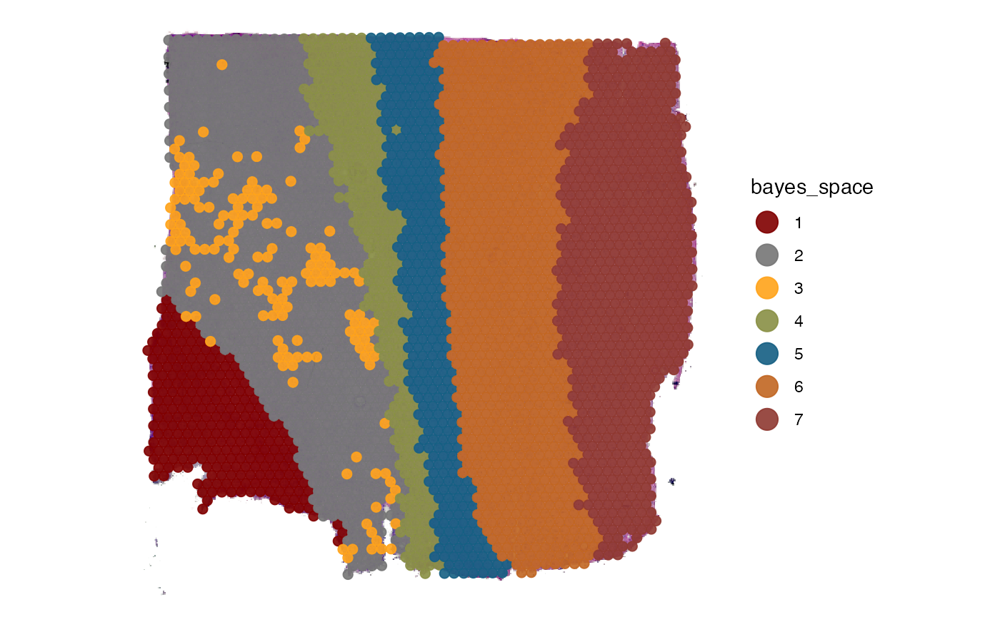
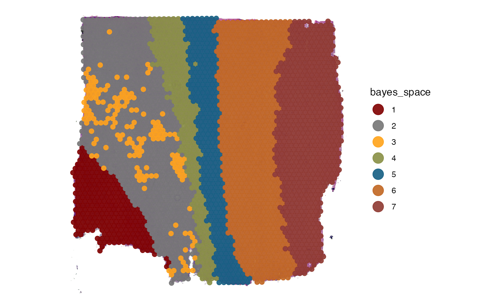
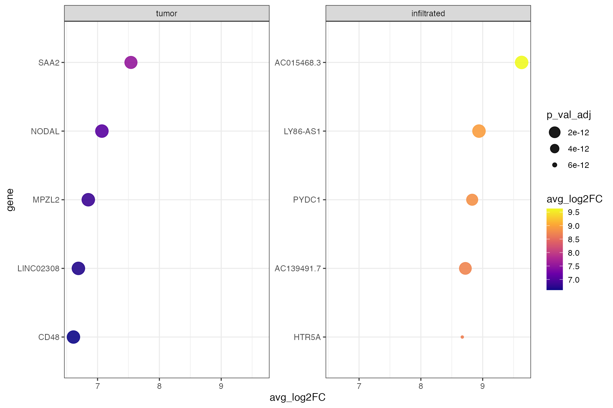
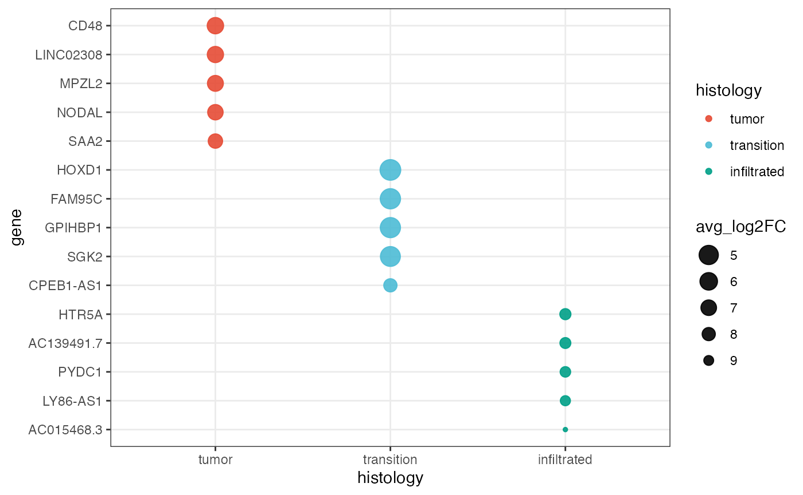
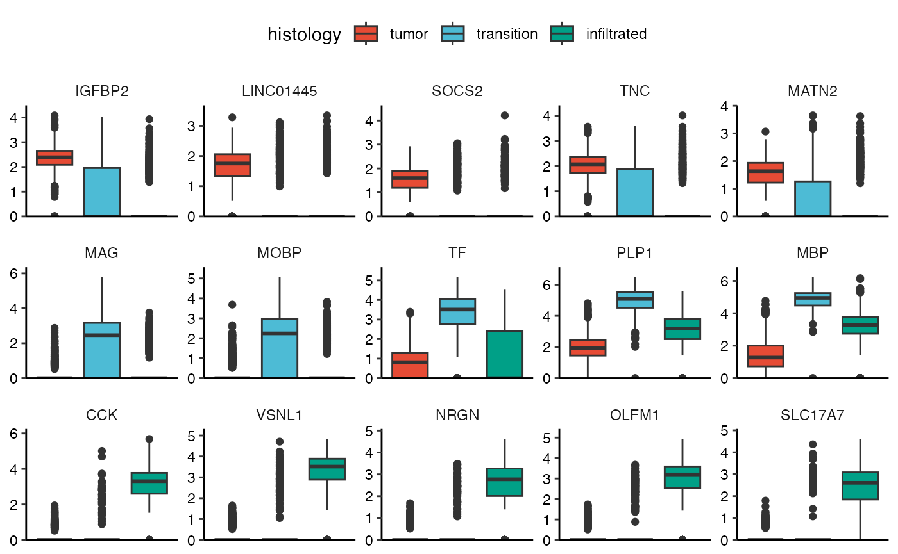
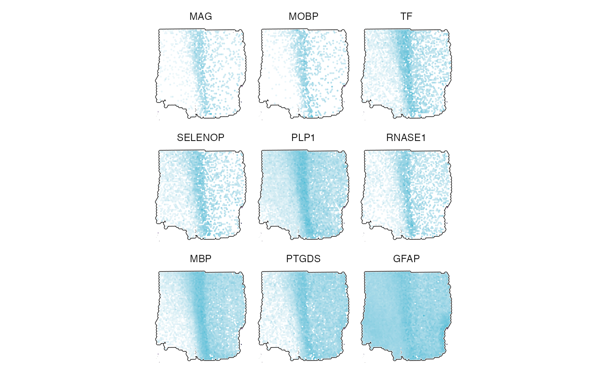

Differential Expression Analysis (DEA)
dea.Rmd1. Introduction
Differential expression analysis (DEA) aims to discover quantitative
changes in gene expression levels between defined experimental groups.
Grouping information is stored in form of grouping variables in the meta
data of SPATA2 object. This includes all SPATA2 intern
generated grouping options such as spatial segmentation and clustering as well as any other grouping
variable that has been added via addFeatures().
# load required packages
library(SPATA2)
library(tidyverse)
# load SPATA2 inbuilt example data
object_t269 <- loadExampleObject("UKF269T", process = TRUE, meta = TRUE)
# plot histology
plotSurface(object_t269, color_by = "histology", pt_clrp = "npg")
# plot bayes space cluster
plotSurface(object_t269, color_by = "bayes_space", pt_clrp = "uc") 

The function getGroupingOptions() returns the variable
names based on which DEA can be conducted. This vignette conducts
differential expression analysis based on the histological grouping. You
can exchange ‘histology’ with ‘bayes_space’ whenever
the grouping is specified to use the clustering results.
getGroupingOptions(object_t269)## factor factor factor factor
## "tissue_section" "seurat_clusters" "histology" "bayes_space"2. Running the analysis
SPATA2 uses the function Seurat::FindAllMarkers() for
differential expression analysis. It’s output is a data.frame in which
each row corresponds to a gene that turned out to be a marker gene for
one of the identity groups. Additional variables provide information
about it’s p-value, adjusted p-value, logFold change etc.
runDEA() does not alter the output but stores it in the
SPATA2 object.
object_t269 <- runDEA(object = object_t269, across = "histology", method = "wilcox")3. Extracting results
There are two main functions with which you can manually extract the
DEA results desired. First, getDeaResultsDf() returns the
original resulting data.frame of Seurat::FindAllMarkers().
getDeaGenes() returns a vector of gene names.
# extract the complete data.frame
dea_df <-
getDeaResultsDf(
object = object_t269,
across = "histology"
)
nrow(dea_df)## [1] 22298
head(dea_df)## # A tibble: 6 × 7
## p_val avg_log2FC pct.1 pct.2 p_val_adj histology gene
## <dbl> <dbl> <dbl> <dbl> <dbl> <fct> <chr>
## 1 3.26e-17 7.54 0.037 0 4.89e-13 tumor SAA2
## 2 7.28e-23 7.07 0.05 0 1.09e-18 tumor NODAL
## 3 1.55e-19 6.85 0.042 0 2.33e-15 tumor MPZL2
## 4 7.17e-19 6.69 0.041 0 1.08e-14 tumor LINC02308
## 5 7.09e-18 6.61 0.038 0 1.06e-13 tumor CD48
## 6 3.26e-17 6.56 0.037 0 4.89e-13 tumor HOXA-AS2Using the arguments across_subset, min_lfc,
n_highest_lfc, max_adj_pval,
n_lowest_pval the output of the function can be adjusted to
specific questions.
# e.g. top 10 genes for histology area 'tumor'
getDeaResultsDf(
object = object_t269,
across = "histology",
across_subset = "transition", # the group name(s) of interest,
n_highest_lfc = 10, # top ten genes
max_adj_pval = 0.01 # pval must be lower or equal than 0.01
)## # A tibble: 10 × 7
## p_val avg_log2FC pct.1 pct.2 p_val_adj histology gene
## <dbl> <dbl> <dbl> <dbl> <dbl> <fct> <chr>
## 1 8.53e- 8 7.98 0.01 0 1.28e- 3 transition CPEB1-AS1
## 2 1.21e- 11 4.59 0.042 0.006 1.82e- 7 transition SGK2
## 3 8.16e- 30 4.40 0.111 0.016 1.22e- 25 transition GPIHBP1
## 4 2.18e- 20 4.34 0.075 0.011 3.28e- 16 transition FAM95C
## 5 1.00e- 10 4.07 0.04 0.006 1.50e- 6 transition HOXD1
## 6 6.57e- 72 4.03 0.303 0.057 9.86e- 68 transition GJB1
## 7 6.05e- 12 3.90 0.054 0.011 9.08e- 8 transition SMIM6
## 8 1.65e- 8 3.70 0.061 0.018 2.48e- 4 transition PIEZO2
## 9 4.50e- 15 3.69 0.088 0.022 6.75e- 11 transition LRP2
## 10 2.39e-168 3.68 0.72 0.2 3.58e-164 transition MAG4. Visualize results
4.1 Heatmaps
plotDeaHeatmap() visualizes the results of DEA by using
to the results you would extract with
getDeaResultsDf().
hm <-
plotDeaHeatmap(
object = object_t269,
across = "histology",
clrp = "npg",
n_highest_lfc = 10, # subset genes
n_bcs = 100
)
hm4.2 Dotplots
plotDeaDotPlot() visualizes the results of DEA either by
group…
plotDeaDotPlot(
object = object_t269,
across = "histology",
across_subset = c("tumor", "infiltrated"), # specify single groups if desired
n_highest_lfc = 5,
by_group = TRUE,
scales = "free_y",
nrow = 1
)
… or with all groups together.
plotDeaDotPlot(
object = object_t269,
across = "histology",
color_by = "histology",
pt_clrp = "npg",
size_by = "avg_log2FC",
n_highest_lfc = 5,
by_group = FALSE
)
4.3 Box- and Violinplots
There are additional ways to visualize the results of your DEA. As
with almost all plotting functions in SPATA2 a vector
of gene names is necessary for the function to know which genes to plot.
getDeaGenes() is the second function to extract DEA results
and a wrapper around getDeaResultsDf() that returns a
vector gene names.
genes_of_interest <-
getDeaGenes(
object = object_t269,
across = "histology", # the grouping variable
method_de = "wilcox", # the method with which the results were computed
n_highest_lfc = 10,
max_adj_pval = 0.001
)
head(genes_of_interest) # first six## tumor tumor tumor tumor tumor tumor
## "SAA2" "NODAL" "MPZL2" "LINC02308" "CD48" "HOXA-AS2"
tail(genes_of_interest) # last six## infiltrated infiltrated infiltrated infiltrated infiltrated infiltrated
## "HTR5A" "CRHR2" "CACNG2" "TRIM54" "ACTC1" "KRT222"A vector of gene names as returned by getDeaGenes() is a
perfectly valid input for other plotting functions.
top_5_markers_269 <-
getDeaGenes(
object = object_t269,
across = "histology",
n_lowest_pval = 5,
min_lfc = 0.1 # set min_lfc! else downregulated genes are included
)
top_5_markers_269## tumor tumor tumor tumor tumor transition
## "IGFBP2" "LINC01445" "SOCS2" "TNC" "MATN2" "MAG"
## transition transition transition transition infiltrated infiltrated
## "MOBP" "TF" "PLP1" "MBP" "CCK" "VSNL1"
## infiltrated infiltrated infiltrated
## "NRGN" "OLFM1" "SLC17A7"
# plot results for t269
plotBoxplot(
object = object_t269,
variables = top_5_markers_269,
across = "histology",
clrp = "npg",
nrow = 3
) +
theme(axis.text.x = element_blank(), axis.ticks.x = element_blank()) +
legendTop()
4.4 Surface plots
getDeaGenes() complements
plotSurfaceComparison().
# top 9 markers for transition area
transition_markers <-
getDeaGenes(object_t269, across = "histology", across_subset = "transition", n_lowest_pval = 9)
plotSurfaceComparison(
object = object_t269,
color_by = transition_markers,
pt_clrsp = color_vector("npg")[2], # plot cluster color against white
outline = TRUE,
nrow = 3
) +
legendNone()